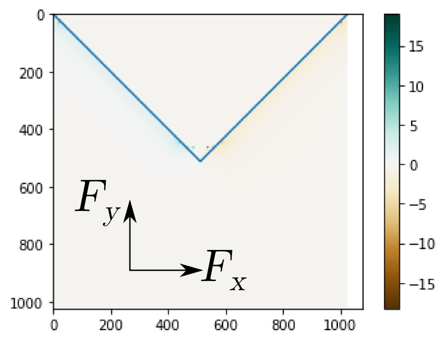
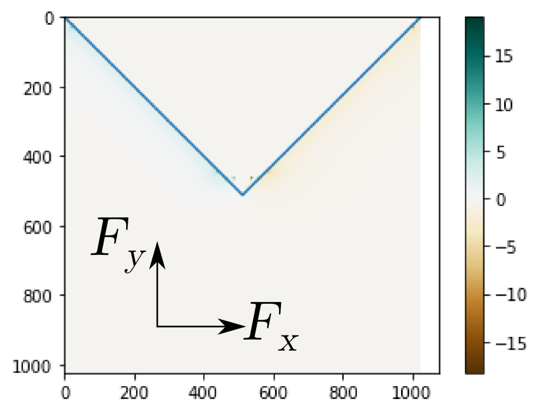

| calibration .txt | | rect | list of tuples | the coordinates of a rectangle encompassing the magnet, the tip of the magnet is indicated by the middle coordinate. |
| calibration .txt | | pixXY | float | the pixel size (in µm/px) |
| calibration .txt | | name | str | optional |
| CSV | | path | path | Address of the source image TIF file |
| CSV | | start_time | time | Time when the file began to be acquired (timestamp of the first frame in the file) |
| CSV | | time_in_file | seconds | Number of seconds since start_time |
| CSV | | start_time_s | seconds | start_time, converted in a number of seconds |
| CSV | | time | seconds | Number of seconds since an epoch |
| CSV | | timestamp | time | Time when the frame was acquired |
| CSV | | timeOn | time | Time(s) when the magnet was added, Specified by the forceOn variable |
| CSV | | timeOff | time | Time(s) when the magnet was removed, Specified by the forceOn variable |
| CSV | | forceActivated | bool | Whether the magnet was present at the current frame |
| CSV | | time_since_beginning | seconds | Number of seconds since the beginning of the experiment (the first acquisition) |
| CSV | | time_interval | seconds | Number of seconds between this frame and the previous one |
| CSV | | seconds_since_first_magnet_ON | seconds | Number of seconds since/until the magnet was added for the first time (beginning of pull) |
| CSV | | seconds_since_first_magnet_OFF | seconds | Number of seconds since the magnet was removed for the first time (beginning of release), So far added at step 3/3 (not in the CSV file) |
| CSV | | duration_of_pull | seconds | Duration of the pull, So far added at step 3/3 (not in the CSV file) |
| CSV | | index_first_frame | frame | Index of the frame considered as timepoint 0, So far added at step 3/3 (not in the CSV file) |
| CSV | | index_release | frame | Index of the frame considered as the first frame of the release, So far added at step 3/3 (not in the CSV file) |
| CSV | | frame_x | number | Frame number (since the beginning of the acquisition), TO DELETE |
| CSV | | positions | number | Position number |
| CSV | | t | number | Frame number (zero-indexed!) |
| CSV | | x | pixels | Location of the locus (in the referential of the drift-corrected frame) |
| CSV | | y | pixels | Location of the locus (in the referential of the drift-corrected frame) |
| CSV | | z | pixels | Location of the locus (in the referential of the drift-corrected frame) |
| CSV | Tracking | x_orig | pixels | Location of the locus (in the referential of the drift-corrected frame) |
| CSV | Tracking | y_orig | pixels | Location of the locus (in the referential of the drift-corrected frame) |
| CSV | Tracking | z_orig | pixels | Location of the locus (in the referential of the drift-corrected frame) |
| CSV | Tracking | Fluo. instensity | | Estimated spot intensity, From trackUsingMouse |
| CSV | Tracking | Backgound level | | Estimated background level, From trackUsingMouse |
| CSV | Tracking | Backgound tilt X | | Estimated background tilt in X, From trackUsingMouse |
| CSV | Tracking | Backgound tilt Y | | Estimated background tilt in Y, From trackUsingMouse |
| CSV | Tracking | Backgound tilt Z | | Estimated background tilt in Z, From trackUsingMouse |
| CSV | Tracking | Code (bits: spot detected, fit convereged) | | 0 : no spot detected
1 : spot detected
2: ?
3 : spot detected and fit converged, From trackUsingMouse |
| CSV | | frame_y | number | Frame number (1-indexed), TO DELETE |
| CSV | | x_drift | pixels | Drift in x, with respect to the first frame, Should be always 0 now |
| CSV | | y_drift | pixels | Drift in x, with respect to the first frame, Should be always 0 now |
| CSV | | z_drift | pixels | Drift in x, with respect to the first frame, Should be always 0 now |
| CSV | Tracking | x_DC | pixels | Location of the locus (in the referential of the wide-field image // no crop) |
| CSV | Tracking | y_DC | pixels | Location of the locus (in the referential of the wide-field image // no crop) |
| CSV | Tracking | z_DC | pixels | Location of the locus (in the referential of the wide-field image // no crop) |
| CSV | Tracking | x_DCum | µm
| Location of the locus (in the referential of the wide-field image // no crop) |
| CSV | Tracking | y_DCum | µm | Location of the locus (in the referential of the wide-field image // no crop) |
| CSV | Tracking | z_DCum | µm | Location of the locus (in the referential of the wide-field image // no crop) |
| CSV | | zixelsize | µm/px | The pixel size in x/y |
| CSV | | stepz | µm | The step size between planes (z) |
| CSV | Tracking | fitOk | bool | True if the spot fitting converged, Same as Code==3 |
| CSV | Force | Fx | N | X component of the force (per particle) |
| CSV | Force | Fy | N | Y component of the force (per particle) |
| CSV | Force | Fz | N | Z component of the force (per particle) |
| CSV | Tracking | dx | pixels | X component of the displacement of the locus |
| CSV | Tracking | dy | pixels | Y component of the displacement of the locus |
| CSV | Rotated movies | Fx_R | pn/part | X component of the force, when the force has been aligned with the X axis. Should be zero |
| CSV | Rotated movies | Fy_R | pn/part | Y component of the force, when the force has been aligned with the X axis. |
| CSV | Rotated movies | dx_R | pixels | X component of the displacement of the locus, when the force has been aligned with the X axis. |
| CSV | Rotated movies | dy_R | pixels | X component of the displacement of the locus, when the force has been aligned with the X axis. |
| CSV | Quant | Df | pixels | Component of the motion along the direction of the force (with respect to the first point), in the reference frame of the image frame (camera reference frame). |
| CSV | Quant | Dmb | pixels | Distance of the locus with respect to the nuclear enveloppe, in the direction of the force |
| CSV | Quant | a_tgt | | The tangent to the nuclear enveloppe is computed as a line equation y=a*x+b. This is a. |
| CSV | Quant | b_tgt | | The tangent to the nuclear enveloppe is computed as a line equation y=a*x+b. This is b. |
| CSV | Quant | x_Nmb | pixels | X coordinate of the intersection between the direction of the force and the nuclear enveloppe, away from the magnet |
| CSV | Quant | x_mb | pixels | X coordinate of the intersection between the direction of the force and the nuclear enveloppe, towards from the magnet |
| CSV | Quant | y_Nmb | pixels | Y coordinate of the intersection between the direction of the force and the nuclear enveloppe, away from the magnet |
| CSV | Quant | x_omb | pixels | « o » means orthogonal to the force : x coordinate of the intersection between the orthogonal direction of the force and the nuclear enveloppe. |
| CSV | Quant | y_omb | pixels | See x_omb |
| CSV | Quant | x_oNmb | pixels | See x_omb (membrane opposite to x_omb) |
| CSV | Quant | y_oNmb | pixels | See x_omb |
| CSV | Quant | y_mb | pixels | Y coordinate of the intersection between the direction of the force and the nuclear enveloppe, towards from the magnet |
| CSV | Quant | x_ctr | pixels | X coordinate, with respect to the centroid |
| CSV | Quant | y_ctr | pixels | Y coordinate, with respect to the centroid |
| CSV | Quant | dx_ctr | pixels | Displacement in x (it is the displacement between the next frame and the current frame), with respect to the centroid |
| CSV | Quant | dy_ctr | pixels | Displacement in y (it is the displacement between the next frame and the current frame), with respect to the centroid |
| CSV | Quant | dx_ctr_R | pixels | Displacement in x (it is the displacement between the next frame and the current frame), with respect to the centroid, rotated so that the force points right |
| CSV | Quant | dy_ctr_R | pixels | Displacement in y (it is the displacement between the next frame and the current frame), with respect to the centroid, rotated so that the force points right |
| CSV | Quant | closX | pixels | X coordinate of the closest point of the membrane, wrt to the magnet |
| CSV | Quant | closY | pixels | X coordinate of the closest point of the membrane, wrt to the magnet |
| CSV | Quant | x_clos | pixels | X coordinate of the locus in the (closX, closY) reference frame (see above). |
| CSV | Quant | y_clos | pixels | Y coordinate of the locus in the (closX, closY) reference frame (see above). |
| CSV | Quant | closD | pixels | Distance of the locus wrt the closest point of the membraen wrt to the magnet. Distance between (x,y) and (closX, closY) |
| CSV | Quant | u_ctr | pixels | U (along the median force) coordinate of the locus, in the reference frame of the centroid |
| CSV | Quant | v_ctr | pixels | V (transverse to the median force) coordinate of the locus, in the reference frame of the centroid |
| CSV | Quant | uu_ctr | pixels | UU (along the instant force) coordinate of the locus, in the reference frame of the centroid |
| CSV | Quant | vv_ctr | pixels | VV (transverse the median force) coordinate of the locus, in the reference frame of the centroid |
| CSV | Quant | frame1 | | Frame number (one-indexed) |
| CSV | Quant | B1x | pixels | X component of a coordinate basis where :
B1 is in the direction of the force
B2 is orthogonal to B1, in the (x,y) plane
B3 is orthogonal to B1 and B2 |
| CSV | Quant | B1y | pixels | See B1x for description |
| CSV | Quant | B1z | pixels | See B1x for description |
| CSV | Quant | B2x | pixels | See B1x for description |
| CSV | Quant | B2y | pixels | See B1x for description |
| CSV | Quant | B2z | pixels | See B1x for description |
| CSV | Quant | B3x | pixels | See B1x for description |
| CSV | Quant | B3y | pixels | See B1x for description |
| CSV | Quant | B3z | pixels | See B1x for description |
| CSV | Quant | ctrX | pixels | X component of the (2D) centroid of the segmentation |
| CSV | Quant | ctrY | pixels | Y component of the (2D) centroid of the segmentation |
| CSV | | x_INT | Pixels | X coordinate of the locus (rounded to nearst integer) |
| CSV | | y_INT | Pixels | Y coordinate of the locus (rounded to nearst integer) |
| CSV | Segmentation | area | pixels | Number of pixels lying in the 2D mask |
| CSV | | cell | | index of the file (in `img_p`), For debugging |
| CSV | | file | | Filename |
| CSV | | frame | | frame number (0-indexed) |
| CSV | Segmentation | mean | pixel | mean intensity value of the siRDNA channel (averaged over the 2D mask and 1 z-plane) |
| CSV | Segmentation | std | pixel | standard deviation of the intensity value (averaged over the 2D mask and 1 z-plane) |
| CSV | Segmentation | mean_avg | pixel | mean intensity value (averaged over the 2D mask and 3 z-plane) |
| CSV | Segmentation | std_avg | pixel | standard deviation of the intensity value (averaged over the 2D mask and 3 z-plane) |
| CSV | Bleaching | ALLCELLS_mean_mean | pixel | column `mean` averaged for all cells (computed per frame) |
| CSV | Bleaching | ALLCELLS_mean_avg_mean | pixel | column `mean_avg` averaged for all cells (computed per frame) |
| CSV | Bleaching | ALLCELLS_std_mean | pixel | column `std` averaged for all cells (computed per frame) |
| CSV | Bleaching | ALLCELLS_std_avg_mean | pixel | column `std_avg` averaged for all cells (computed per frame) |
| CSV | Bleaching | ALLCELLS_mean_std | pixel | tandard deviation of the column `mean` (computed per frame) |
| CSV | Bleaching | ALLCELLS_mean_avg_std | pixel | standard deviation of the column `mean_avg` (computed per frame) |
| CSV | Bleaching | ALLCELLS_std_std | pixel | standard deviation of the column `std` (computed per frame) |
| CSV | Bleaching | ALLCELLS_std_avg_std | pixel | standard deviation of the column `std_avg` (computed per frame) |
| CSV | Bleaching | ALLCELLS_mean_norm | pixel | per-frame normalization constant, based on the `mean` intensity value |
| CSV | Bleaching | ALLCELLS_mean_avg_norm | pixel | per-frame normalization constant, based on the `mean_avg` intensity value |
| CSV | Bleaching | ALLCELLS_std_norm | pixel | per-frame normalization constant, based on the `std` intensity value |
| CSV | Bleaching | ALLCELLS_std_avg_norm | pixel | per-frame normalization constant, based on the `std_avg` intensity value |
| CSV | Quant | ctr_closX | pixels | The mean (over time) difference between the X coordinate of the centroid and the closest membrane to the magnet |
| CSV | Quant | ctr_closY | pixels | The mean (over time) difference between the Y coordinate of the centroid and the closest membrane to the magnet |
| CSV | Quant | Dctr | pixels | Distance between the locus (in the reference frame of the centroid) and (ctr_closX, ctr_closY) (see above) |
| CSV | Quant | Dctr0 | pixels | Same as Dctr, but rescaled so that Dctr(t=0)==0 |
| CSV | Quant | Dmb0 | pixels | Same as Dmb, but rescaled so that Dmb(t=0)==0 |
| CSV | Quant | closD0 | pixels | Same as closD, but rescaled so that closD(t=0)==0 |
 
